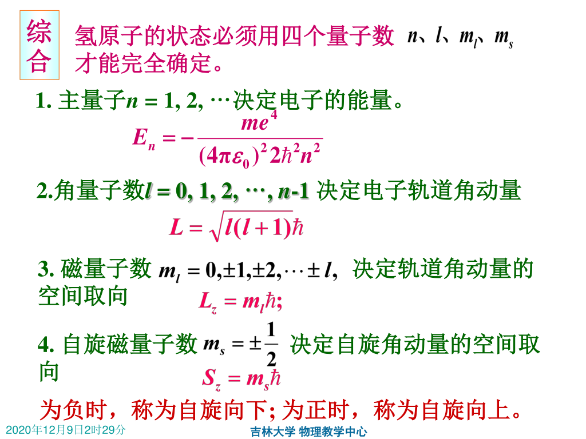
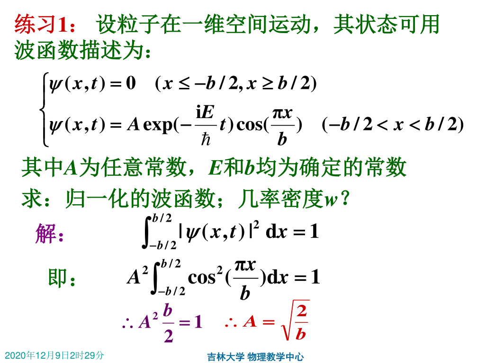
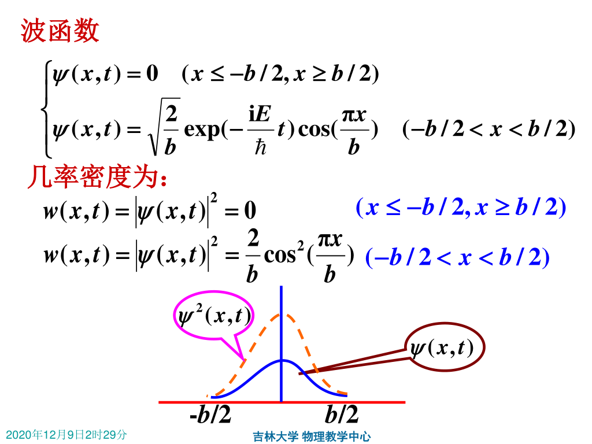
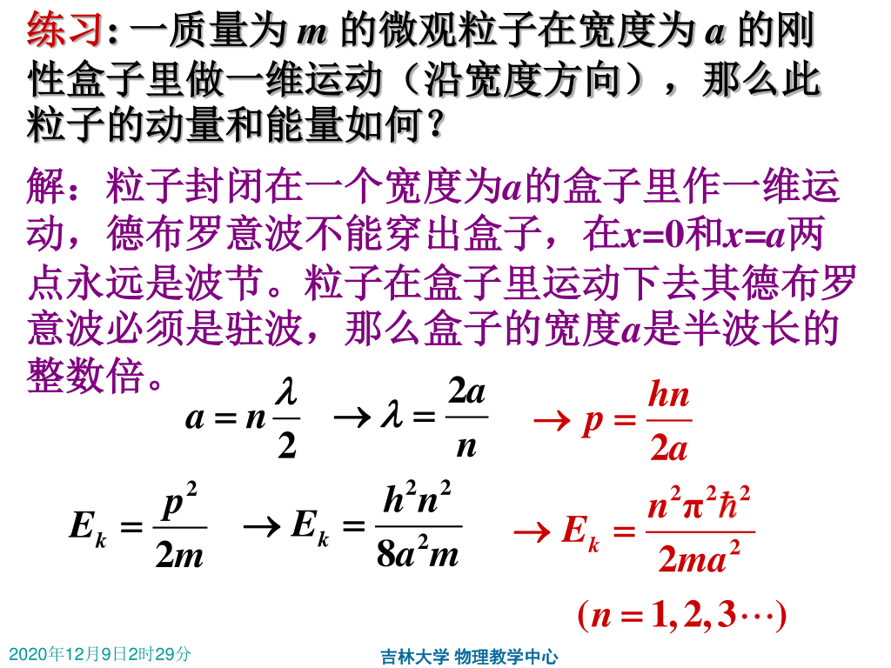

量子力学基础¶
1 波函数及其统计解释¶
1.1 波函数¶
-
自由粒子波函数为
\[\begin{equation} \Psi( \overrightarrow{r}, t) = \psi_0 e^{\frac{i}{\hbar}(Et - \bar p \bar r)} = \psi_0 e^{\frac{i}{\hbar}(Et - (p_x x + p_y y + p_z z))} \end{equation}\]其中 \(E = h\nu = \hbar \omega, \overrightarrow{p} = \dfrac{h}{\lambda}\overrightarrow{e_r} = \hbar \overrightarrow{k}\)，该方程称为自由粒子状态的波函数，\(\psi_0\) 为振幅。
Note
- 波函数是描述粒子状态的函数。
- 波函数无物理意义，其平方有意义，代表了某时某刻出现粒子的概率。
1.2 波函数的统计解释¶
-
空间中找到某点粒子的概率与波函数的模的平方成正比。
写成数学表达式，\(dW(x, y, z, t) = w(x, y, z, t) = \left|\Psi(x, y, z, t) \right|^2dxdydz\)
1.3 归一化与标准化条件¶
-
归一化条件：各处粒子出现概率之和为 \(1\)。
\[\begin{equation} W(t) = \int_{\infty}w(x, y, z, t)dV = \int_{\infty}\left|\Psi(x, y, z, t) \right|^2dV = 1 \\ \end{equation}\] -
标准化条件
- 单值性：每点处的概率密度唯一确定。
- 连续性：波函数要是连续的。
- 有限性：每点处的概率有限。
2 薛定谔方程¶
2.1 几种情形下的薛定谔方程¶
-
对于自由粒子
\[\begin{equation} -\dfrac{\hbar^2}{2m}\nabla^2\Psi = i\hbar\dfrac{\partial{\Psi}}{\partial{t}} \end{equation}\]其中 \(\nabla^2 = \dfrac{\partial^2}{\partial x^2} + \dfrac{\partial^2}{\partial y^2} + \dfrac{\partial^2}{\partial z^2}\)。
-
在势场 \(U(\overrightarrow{r}, t)\) 中运动的粒子（薛定谔方程）
\[\begin{equation} \left[-\dfrac{\hbar^2}{2m}\nabla^2 + U\right]\Psi = i\hbar\dfrac{\partial{\Psi}}{\partial{t}} \end{equation}\] -
多粒子体系
\[\begin{equation} \left[-\sum_{i}\dfrac{\hbar^2}{2m}\nabla^2 + U\right]\Psi = i\hbar\dfrac{\partial{\Psi}}{\partial{t}} \end{equation}\]
2.2 定态薛定谔方程¶
-
定态：能量有确定状态，与时间无关。
在此情况下，波函数可表示为
\[\begin{equation} \Psi(\overrightarrow{r}, t) = \psi(\overrightarrow{r})f(t) = \psi(\overrightarrow{r})e^{-i\frac{E}{\hbar}t} \end{equation}\]其中 \(E\) 是某一个常数，满足 \(\dfrac{i\hbar}{f(t)}\cdot \dfrac{df(t)}{dt} = E\)。
并且此时对于 \(\psi(\overrightarrow{r})\)，满足
\[\begin{equation} \left[-\dfrac{\hbar^2}{2m}\nabla^2 + U(\overrightarrow{r})\right]\psi(\overrightarrow{r}) = E\psi(\overrightarrow{r}) \end{equation}\]这个方程称为定态薛定谔方程。
定态的特点
- 处于定态下的粒子有确定的能量，而且粒子的概率分布不随时间改变。
- 定态状态下，\(w(x, y, z) = \left|\Psi(x, y, z, t) \right|^2 = \left|\Psi(x, y, z) \right|^2\)
- 数学意义上，定态薛定谔方程无论 \(E\) 取何值均有解，但是在物理意义上，由于方程的解要满足波函数条件，故 \(E\) 只能取特定的值。
3 一维无限深势阱¶
很多情况下粒子被限制在一个很小的范围内运动，运动模型可以看作是一个一维无限深势阱。
-
对于范围处于 \((0 < x < a)\) 的一维无限深势阱，它的波函数表示为
\[\begin{cases} \psi(x) = 0 & x \le 0, x \ge a\\ -\dfrac{\hbar^2}{2m}\nabla^2\psi = E\psi & 0 < x < a \end{cases}\]利用连续条件和归一化条件可以得出
\[ \psi(x) = \sqrt{\dfrac{2}{a}}\sin(\dfrac{n\pi x}{a}) \] -
自由粒子能量 \(E_n = \dfrac{\pi^2\hbar^2n^2}{2ma^2} = n^2E_1\)
-
驻波形态
\[ \psi(x) = \sqrt{\dfrac{2}{a}}\sin(\dfrac{n\pi x}{a}) = C_1e^{-i\frac{n\pi}{a}x} + C_2e^{i\frac{n\pi}{a}x} \]故可以看作是一个驻波形态。
对于结点位置，令 \(\psi(x) = 0\)，可以求解得 \(x = \dfrac{Na}{n}(N = 1, 2, \dots, n)\)
-
位置概率密度
\[ w(x) = \left| \psi_n(x)\right|^2 = \dfrac{2}{a} \sin^2(\dfrac{n\pi x}{a}) \]-
极小处位置
此时在节点处，\(x = \dfrac{Na}{n}, w_{min} = 0\)。
-
极大处位置
此时在节点中点，\(x = \dfrac{(2N + 1)a}{2n}, w_{max} = \dfrac{2}{a}\)。
Tip
宏观情况下粒子概率位置均匀分布，可以理解为此时 \(n \to \infty\)。
-
4 氢原子¶
4.1 氢原子中电子的薛定谔方程¶
将电子势能 \(U = -\dfrac{e^2}{4\pi \varepsilon_0 r}\) 带入到定态薛定谔方程中，可得到其波函数形式，由于在一般坐标系下较难求解，带入到球面坐标系中，最后可化到如下结果：

4.2 氢原子中电子的运动状态¶
-
主量子数 \(n\) 和能量量子化
\(E_n = \dfrac{me^4}{(2\pi \varepsilon_0)^2 2\hbar^2 n^2}\)，其中 \(n = 1, 2, \dots\) 称为主量子数。
电子能量是量子化的，形成了原子能级。
-
角量子数 \(l\) 和角动量的大小量子化
\(L = \sqrt{l(l + 1)}\hbar\)，其中 \(l = 1, 2, \dots, n - 1\) 称为角量子数。
电子绕核的角动量是量子化的。
-
磁量子数 \(m_l\) 和空间量子化
\(L_z = m_l \hbar\)，其中 \(m_l = 0, \pm 1, \dots, \pm l\) 称为角量子数。
这说明电子运动的角动量空间取向也是量子化的。即使对于同一个 \(n\) 和 \(l\) 表征的氢原子，其电子的空间取向也不唯一，有 \((2l + 1)\) 种。
-
自旋磁量子数和自旋角动量空间取向
\(S_z = m_s \hbar\)，为负时称为自旋向下，为正时称为自旋向上。

-
氢原子的电子云
- 概率密度为 \(|\psi|^2\) 的分布称为电子云。
- \(l = 0, m_l = 0\) 的电子云分布具有球对称性，其他状态的电子云分布都具有对 \(z\) 轴的轴对称性。
- \(n, l, m_l\) 这三个量子数决定着原子中电子云的空间分布。
例题¶
 
这里将 \(t = 0\) 代入波函数里可以简便运算。 